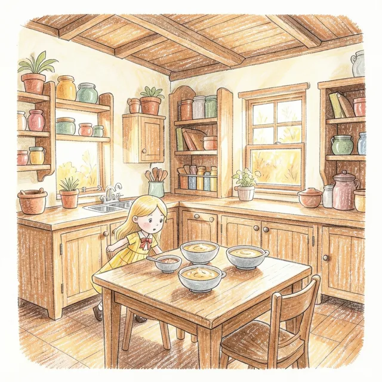
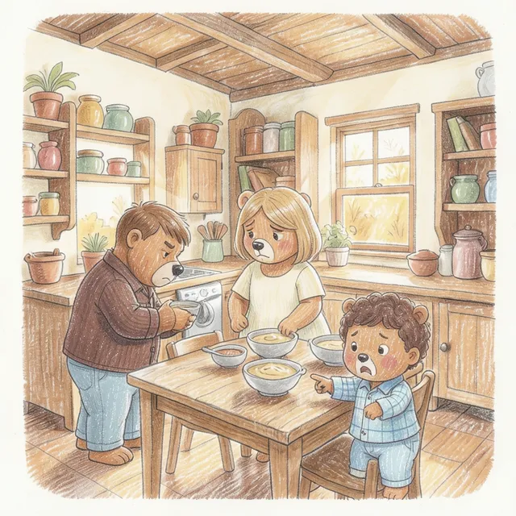
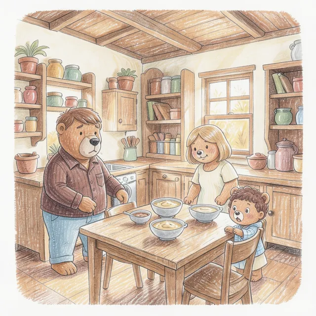

AhmadSiddiqui.
I build and measure ML systems that run on small hardware: local LLMs, RAG that has to quote its sources, and on-device vision and speech.
Four projects, failures included
(04) open one01 PictureBOOKan offline picture-book maker Local AI · Speech · Vision Three models take turns on one 8 GB GPU and turn a spoken story into an illustrated PDF in 6 to 9 minutes. Nothing leaves the laptop.
A parent types, imports or records a story and gets an illustrated PDF a few minutes later. The child's voice and the family's story stay on the machine.
Built
A Tauri 2 desktop app. A Rust core owns the book library; a Python FastAPI sidecar runs one GPU job at a time behind a per-launch bearer token and streams progress over SSE. Every model stage is its own process under a memory-capped systemd scope, so killing the app, even with SIGKILL, leaves no stray process and no VRAM in use (this is tested).
Measured
Whisper large-v3-turbo: 1.9% word error rate on 48 synthetic clips. Vision critic: 94.7% accuracy and 99% recall of deliberate mismatches on 40 synthetic images. About 10 s per image and 6 to 9 minutes per book. 95 sidecar tests and 61 pipeline-rule tests pass, alongside a Rust test suite.
Limits
Tested on one machine (Linux, RTX A2000), English only, and speech was tested on synthetic clips rather than real parents. Not packaged yet.
- Story in
- Whisper
- Plan (Gemma 4)
- Parent approves characters
- Draw (FLUX.2 klein)
- Vision critic
- Human review
Pipeline. Highlighted steps are where a person decides.



Pages from a book generated on the 8 GB laptop GPU (Goldilocks and the Three Bears, crayon style).
Did not work
No model I tried could find extra hands or legs (0 of 3). Redrawing a flagged page fixed only 2 of 13 defects; the other 11 came back in all three redraws. So the critic writes notes for the parent and never acts alone, and a human reviews every page. Silence also became a made-up book until I added a gate for it.
- Tauri 2
- Rust
- SvelteKit
- TypeScript
- FastAPI
- llama.cpp
- Whisper
- FLUX.2 klein
- Gemma 4
02 Template_RAGretrieval that has to show its evidence RAG · Retrieval evaluation A RAG library for documents and code where an answer only counts if every quote is found word for word in the chunk it cites.
Most RAG demos cannot tell you when they are wrong. This one only returns an answer if every quote can be found, word for word, in the chunk it cites.
Built
Hybrid retrieval (EmbeddingGemma plus SQLite FTS5 BM25, fused with reciprocal rank fusion) and a listwise reranker. Python is chunked along its AST. Ingest-time gates keep tables of contents, licence headers and generated code out of the index, and answer gates locate each quote in its source chunk and store the chunk's exact text. A Streamlit UI shows every stage's rank. It started from the ingestion and verification code of QuestionPrep, generalised into a reusable library.
Measured
Frozen corpus and gold sets, with bootstrap confidence intervals and paired significance tests. The reranker added +18.6 recall@1 on 70 hand-written queries and +25.5 on 149 synthetic ones. 513 tests and CI.
- Ingest
- Chunk (Markdown / AST)
- Quality gate
- Dense + BM25
- RRF
- Rerank
- Quote gates
Pipeline. Highlighted steps reject weak input or unsupported answers.
Did not work
A web-trained cross-encoder (ms-marco) never helped, and letting it replace the ranking lost 14 points of recall@5 on code, so it votes alongside dense and BM25 instead. The best reranker is non-commercial (CC-BY-NC); the README says so and names a permissive fallback.
- Python
- SQLite FTS5
- sentence-transformers
- Streamlit
- pytest
- GitHub Actions
03 DLRAGdoes a tool-using agent beat plain RAG for a small model? LLM evaluation · Agents Retrieval took a 2B model from 3.3% to 33.3% of runs passing every test. Agent tools added nothing detectable.
A 2B model writes PyTorch code from a textbook and its repository. Is it better to paste retrieved passages into the prompt once, or to let the model call search tools?
Built
56 execution-graded tasks: 32 for tuning and 24 frozen for the final test, with a sha256 manifest checked before analysis. Six arms on one model, settings tuned on the dev tasks and the test run once, paired bootstrap intervals, and a parity check that proves each pair of arms gets an identical first message.
Measured
Retrieval is what matters: 3.3% of runs passed every test with nothing, 33.3% with passages plus a repository map. Tools added nothing detectable (−1.7 points, 95% CI −10.8 to +6.7) at about 3× the tokens. A 4B model was not measurably better than the 2B. The repository map cut import failures from 34.2% to 9.2%.
Did not work
The original question, whether a small model plus retrieval can replace a much bigger one, was not tested: the largest model was 4B. The report says so. A fine-tuning arm was shelved because its training data was templated prompts nobody would ask.
- Python
- uv workspace
- llama.cpp
- Agno
- BM25 + dense (fastembed)
- Docling
04 QuestionPrepinterview practice from your own documents Full-stack ML · Final-year project Upload a PDF, a local LLM writes the questions, and answers are scored in three stages. Stress detection runs in the browser. My final-year project.
Upload a PDF, a local LLM writes interview questions with reference answers, and you answer by typing or speaking. Everything runs on your own machine.
Built
FastAPI, SQLite and ChromaDB with a llama.cpp server. Answers are scored in three stages (fuzzy match, then a BGE bi-encoder, then a DeBERTa NLI cross-encoder), with a guard for cut-off answers and a cap when the answer contradicts the reference. Difficulty adapts to a running average of the score. Stress detection runs in the browser: a TCN on ONNX Runtime Web with a hand-written DSP front end (FFT, mel filterbank, DCT-II). Also token auth, single-use SSE tickets and upload validation.
Measured
460 tests (plus 42 GPU and LLM tests run separately), CI, and a gold set used to tune the question-verification checks.
- Docling
- Chunks
- LLM questions
- Verification gates
- Interview
- 3-stage scoring
Pipeline. Highlighted steps check generated questions and score answers.
Did not work
The scoring has known weaknesses that I documented instead of hiding: an answer cut off mid-sentence can still score 0.8 to 1.0, and a correct answer in different terminology scores about 0.28. The stress detector also produced false positives on stutters.
- FastAPI
- SQLite
- ChromaDB
- llama.cpp
- sentence-transformers
- ONNX Runtime Web
- JavaScript
Also built
Hybrid profanity detection and rewriting
A LoRA-tuned DistilBERT classifier (95.67% accuracy) routes flagged reviews to a QLoRA-tuned LFM2.5-1.2B rewriter, switching adapters on one base model.
GitHub ↗PocketLaw
A retrieval-augmented chatbot over Pakistani banking law, using dense retrieval and a LoRA fine-tuned LLM.
GitHub ↗Currency classifier for the visually impaired
EfficientNet-B0 transfer learning for Pakistani banknotes, with a confidence gate so ambiguous frames are never spoken aloud.
GitHub ↗Edge-IIoT attack detection
Multi-class network intrusion classifier (random forest and XGBoost) reaching 94.67% accuracy with class-imbalance handling.
GitHub ↗Where I have worked
Remote
ML Engineer (contract)
Rezinx- Fine-tuned language models with LoRA for downstream production use cases.
- Built a recommendation engine with Superlinked.
- Evaluated several embedding models for a job-classification task.
- Built a computer-vision hazard detector for fire, knives and stairs that estimates how close each one is to a child.
- Built a Grafana dashboard for monitoring models and systems.
Remote
Machine Learning Intern
Arch Technologies- Built machine learning models to find patterns in large datasets.
- Prepared data and engineered features to improve model accuracy.
- Ran experiments to evaluate models and recommended adjustments.
Lahore
Network Administration Intern
Ittehad Chemicals- Worked on network administration tasks covering microwave WAN links, OSPF routing, Cisco and MikroTik equipment, and Windows Server Active Directory.
What I work with
ML and deep learning
Python, SQL, PyTorch, scikit-learn, XGBoost, Hugging Face Transformers, LoRA and QLoRA fine-tuning, ONNX Runtime, llama.cpp
NLP and retrieval
RAG, hybrid search (BM25 + dense), reranking, embeddings, ChromaDB, NLI, Docling, evaluation (recall@k, MRR, bootstrap confidence intervals)
Vision and speech
YOLOv8 / YOLO11, EfficientNet, ByteTrack, OpenCV, TCN, Whisper
Backend and tooling
FastAPI, REST APIs, SSE, SQLite, Polars, DuckDB, Docker, Grafana, Superlinked, Git, pytest, GitHub Actions, Linux, uv
What I care about
I like ML work where the interesting part is finding out what actually works. My projects report what failed next to what succeeded, because that is the part another engineer needs.
Education: BS Data Science graduate, Khwaja Fareed University of Engineering and Information Technology (KFUEIT), 2022 – 2026, CGPA 3.35 / 4.00.
Away from a keyboard I read mythology and work through logic puzzles.